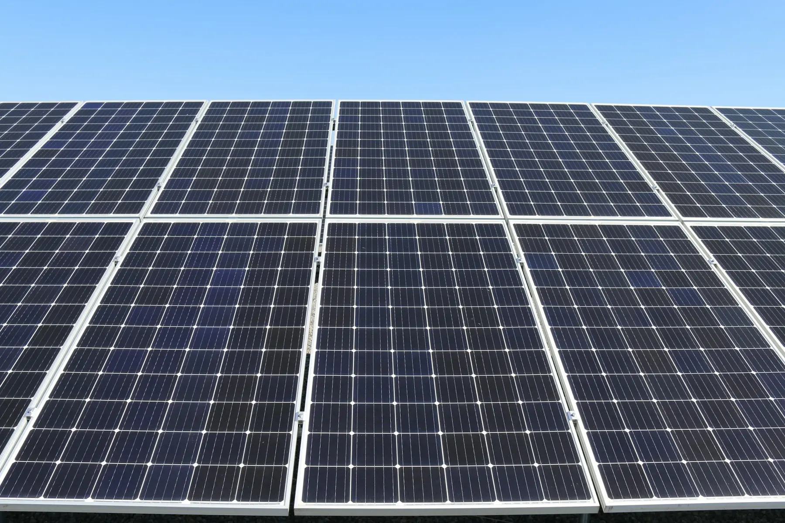
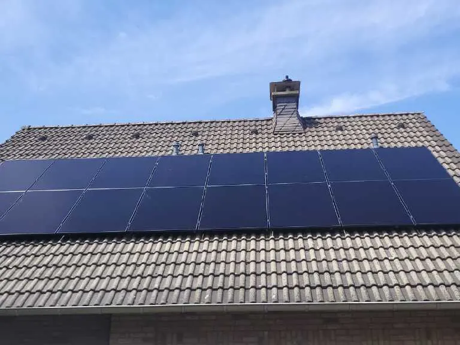

Leistung 02
Photovoltaik, die zu Ihrem Dach passt.
Individuelle Planung statt Schema F: Wir begutachten jedes Dach, holen die maximale Effizienz aus Ausrichtung und Verschattung heraus und montieren mit eigenem Team.
Unser Ansatz
Es geht nicht nur um Module auf dem Dach.
Sondern um das Zusammenspiel von Anlage, Speicher, Wallbox und smarter Steuerung – abgestimmt auf Ihren Verbrauch. Die wichtigste Voraussetzung für Wirtschaftlichkeit ist ein möglichst hoher Eigenverbrauch.
- Individuelle Planung: Jedes Dach wird detailliert begutachtet – Ausrichtung, Neigung, Verschattung, Statik, Eindeckung.
- Ganzheitlich: Speicher, Wallbox und Wärmepumpe werden von Anfang an mitgedacht.
- Wirtschaftlichkeit und Optik stehen für uns an erster Stelle – auch mit Full-Black-Modulen ohne sichtbare Leiterbahnen.

Konfigurator
Stellen Sie Ihre Anlage zusammen.
Dachform, Größe, Modulfarbe, Speicher und Wallbox wählen – die Vorschau und die Kennzahlen passen sich sofort an. Richtwerte, kein Angebot.
Richtwerte: 450 Wp je Modul, 950 kWh je kWp und Jahr, Eigenverbrauch 30 % (ohne Speicher) bis 70 % (Speicher + Wallbox). Die tatsächliche Belegung hängt von Dachmaßen, Fenstern und Verschattung ab.
Komponenten
Wir verarbeiten Qualität, die überzeugt.
Solarmodule – Heckert Solar
Deutscher Hersteller aus Chemnitz, „Made in Germany“. ZEUS-Serie: Glas-Glas-Module mit TOPCon-/bifazialer Technik, ca. 445–460 Wp für Hausdächer, Back-Contact ohne sichtbare Leiterbahnen. ZEUS Full Black für Design-Anlagen, Fassaden und schwierige Dächer.
heckertsolar.comWechselrichter & Speicher – SMA
Sunny Boy und Sunny Tripower Smart Energy als Hybridsysteme mit DC-Speicher, Notstromsteckdose oder Ersatzstromversorgung, Monitoring per App. Bei Netzausfall trennt sich das System normgerecht (VDE-AR-N 4105) und versorgt das Haus weiter.
Speicher im DetailMontagesystem – Wagner Solar TRIC
Seit 1979 in Kirchhain (Hessen), Eigenproduktion, TÜV-zertifiziert mit bauaufsichtlicher Zulassung. Aufdach-Systeme für Pfannen-, Schiefer- und Trapezblechdächer sowie Flachdach-Aufständerungen.
wagner-solar.comDächer
Sattel, Pult, Flach – und das steile Pfannendach.
Wir montieren auf allen gängigen Dachformen. Bei sehr flachen Ziegeldächern (unter 22°) beraten wir ehrlich: Dort ist das Risiko für Undichtigkeiten nach dem Ausklinken der Ziegel erhöht.


Alle Fotos: Kundenanlagen von SOTECH. Weitere Referenzen auf der Seite Über uns
Ablauf
In sechs Schritten zur eigenen Anlage.
Beratung vor Ort
Elektromeister Dirk Gier kommt kostenlos zu Ihnen, schaut sich Dach und Zählerschrank an und bespricht Ihre Ziele.
Angebot & Planung
Belegungsplan, Komponenten, Speicher- und Wallbox-Option – unverbindlich und kostenlos. Ein Vergleichsangebot einzuholen ist ausdrücklich in Ordnung.
Anmeldung beim Netzbetreiber
Wir melden die Anlage an und klären die Zählerfrage – Sie müssen sich um nichts kümmern.
Montage
Dachhaken, Schienen, Module, Verkabelung – ein eingespieltes Team, meist an einem Tag.
Inbetriebnahme & Einweisung
Zählerwechsel, Messung, Inbetriebnahme, Monitoring-App – und eine Einweisung, die Sie verstehen.
Marktstammdatenregister & Service
Registrierung innerhalb eines Monats, Wartung und Monitoring danach. Wir sind auch nach 37 Jahren noch am selben Standort.
Termin wählen
Ihr Dach, unser Angebot.
Kostenlos und unverbindlich – vom Familienbetrieb, der nach der Installation nicht verschwindet.
Vor-Ort-Beratung
Herr Gier kommt zu Ihnen, schaut sich Dach und Zählerschrank an und berät kostenlos.
Termin anfragenBesichtigungsanlage
Speicher, Wallboxen und Wärmepumpe im Betrieb sehen – Mehrfamilienhaus in Aachen, nach Absprache.
Besichtigung vereinbarenRückruf
Sie nennen uns Zeit und Nummer – wir rufen zurück. Auch außerhalb der Bürozeiten erreichbar.
Rückruf wünschenAngebot anfordern
Eckdaten zu Dach und Verbrauch senden – Sie bekommen ein unverbindliches, kostenloses Angebot.
Angebot anfragenOder direkt anrufen
02402 7097620Mo–Do 8–15 Uhr · Fr 8–14 Uhr
Außerhalb der Geschäftszeiten: 0241 562489 oder 0171 5296741